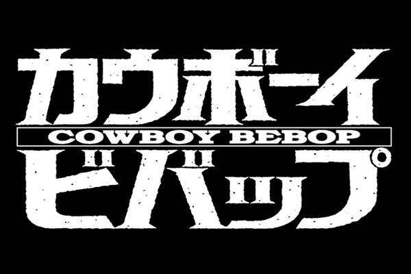
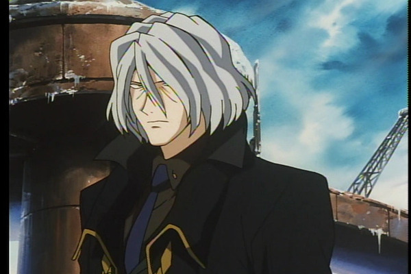

"Cowboy Bebop" é um aclamado anime que mescla elementos de ficção científica, western e noir, criando uma narrativa cativante e única. A história segue Spike Spiegel, um protagonista carismático e cínico, que é um caçador de recompensas no ano de 2071, explorando o espaço com sua tripulação a bordo da nave Bebop. Spike é um ex-membro de uma organização criminosa chamada Syndicate, e sua jornada pessoal é uma busca por redenção e um confronto com seu passado sombrio.O vilão central da série é Vicious, um antigo camarada de Spike no Syndicate, cujas ambições de poder e crueldade o tornam uma ameaça constante. A relação conturbada entre Spike e Vicious cria uma tensão subtextual que permeia a narrativa, tornando o confronto inevitável.

A ambientação de "Cowboy Bebop" é um dos aspectos mais marcantes da obra. A série se passa em um futuro distópico, onde a Terra foi devastada e a humanidade se espalhou pelo sistema solar. O cenário é um ecletismo de culturas, línguas e tecnologias, proporcionando uma mistura fascinante de elementos do passado e do futuro. Os personagens viajam por planetas, asteroides e cidades espaciais, criando um mundo rico e diversificado.
A trilha sonora desempenha um papel fundamental na obra, com uma trilha sonora que abrange gêneros musicais variados, como jazz, blues e rock, contribuindo para a atmosfera única e emocional da série.
Personagens
Spike
Spike Spiegel é um carismático caçador de recompensas com um passado misterioso e turbulento. Seu estilo despojado e engraçado, combinado com sua destreza em artes marciais e sua habilidade no manejo de armas, o tornam um personagem cativante. Ele é conhecido por seu senso de humor sarcástico e sua tendência a se meter em encrenca, muitas vezes acompanhado de seu parceiro, Jet. Spike é motivado por um passado sombrio que o assombra e o impulsiona a caçar criminosos por toda a galáxia. Sua personalidade multifacetada, misturando calma e intensidade, faz dele um dos protagonistas mais icônicos do mundo dos animes.
Sua construção narrativa permite o telespectador se aprofundar na questão distópica da obra como um todo, trazendo questões como saudade, abandono, remorso e impotência.
Jet
Jet é um personagem conhecido por seu visual robusto e personalidade séria. Ele é um ex-policial que se tornou um caçador de recompensas. Com um braço mecânico e um passado marcado por desilusões, Jet é um homem determinado a fazer justiça, mas mantém uma atitude cética em relação ao mundo. Ele é o capitão da nave espacial onde a história se desenrola e trabalha ao lado dos outros personagens. Jet é habilidoso em combate, inteligente e sempre procura o lado certo da lei.
Sua busca por redenção e sua busca por recompensas moldam sua jornada ao longo da série.
Jet é a visão de responsabilidade dentro da nave Bebop, agindo como o personagem "Pé no chão" para com seus companheiros, atraindo uma visão de autoridade leal para o espectador.
Faye Valentine
Faye Valentine é uma personagem cativante, que é retratada como uma mulher forte e independente, com uma personalidade complexa. Faye é astuta, carismática e muitas vezes age com um certo cinismo. Ela tem um passado misterioso que a atormenta, o que a torna uma personagem intrigante.
No enredo, Faye desempenha um papel crucial como uma caçadora de recompensas, juntando-se à equipe de anti-heróis em uma jornada espacial cheia de aventuras. Sua habilidade em pilotar naves e seu talento em situações perigosas a tornam uma peça valiosa na busca por recompensas. Além disso, seu relacionamento complexo com os outros membros da equipe adiciona camadas à dinâmica do grupo.
Faye Valentine é uma personagem que desafia estereótipos e adiciona profundidade à trama, misturando elementos de mistério, ação e drama, tornando-a uma parte essencial da experiência do anime.
Ed
Edward Wong Hau Pepelu Tivrusky IV, também conhecida como Ed, é uma jovem hacker extremamente talentosa, conhecida por sua personalidade excêntrica e hiperativa. Ela é alegre, curiosa e vive a vida sem se preocupar com convenções sociais.
Ed desempenha um papel essencial na equipe principal, agindo como a hacker do grupo, fornecendo suporte tecnológico para suas missões. Além disso, ela é uma pilota habilidosa e é responsável pela nave espacial da equipe. Seu jeito único de ver o mundo e suas habilidades técnicas desempenham um papel crucial na resolução de problemas ao longo da trama.
Embora sua personalidade possa parecer excêntrica, Ed é uma parte valiosa da equipe, adicionando humor e uma perspectiva única à história. Ao longo da história, o verdadeiro gênero de Ed não é revelado, criando uma personagem totalmente desprendida de padrões sempre estabelecidos em narrativas, como "A heroína independente" ou o "Herói hipermasculino" adicionando uma camada muito interessante de reações incognitas para a personagem.
Ein
Ein, um Corgi inteligente, é uma adorável adição à tripulação. Ele não é apenas um mascote, mas também um membro ativo da equipe. Com habilidades excepcionais, Ein ajuda a resolver enigmas e contribui para a resolução de casos. Seu nome completo é "Ein da Família Pembroke Welsh Corgi".
Ele cativa os espectadores com sua inteligência canina, e sua presença enriquece a dinâmica entre os personagens principais, tornando-o um elemento querido na narrativa.
Vicious
Vicious, cujo nome completo é Vicious Crimson, é um personagem central na trama, desempenhando o papel de antagonista principal. Sua personalidade é complexa e sombria, caracterizada por sua frieza e implacabilidade. Ele é um ex-membro do mesmo sindicato criminoso que o protagonista, Spike, e os dois compartilham um passado tumultuado. Vicious é um mestre espadachim e líder de um dos grupos criminosos mais perigosos do cenário do anime. Sua relação com Spike é marcada por conflitos intensos e rivalidade, tornando-o um inimigo formidável. Ele é conhecido por sua aparência distinta, com cabelos brancos e olhos vermelhos, que refletem sua natureza impiedosa.

Ao longo da história, Vicious é uma força motriz por trás de muitos dos eventos que impulsionam a trama, criando tensão e desafios para os personagens principais. Sua influência se estende por toda a série, fazendo dele um personagem intrigante e enigmático que adiciona profundidade à narrativa, culminando em um confronto final emocionante.